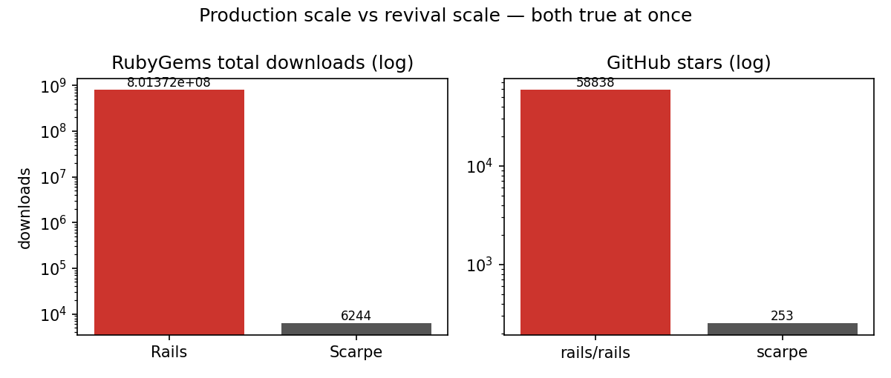
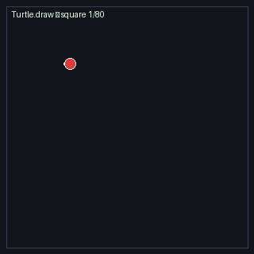
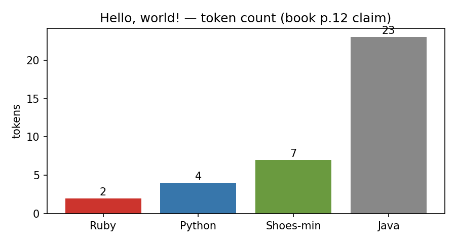
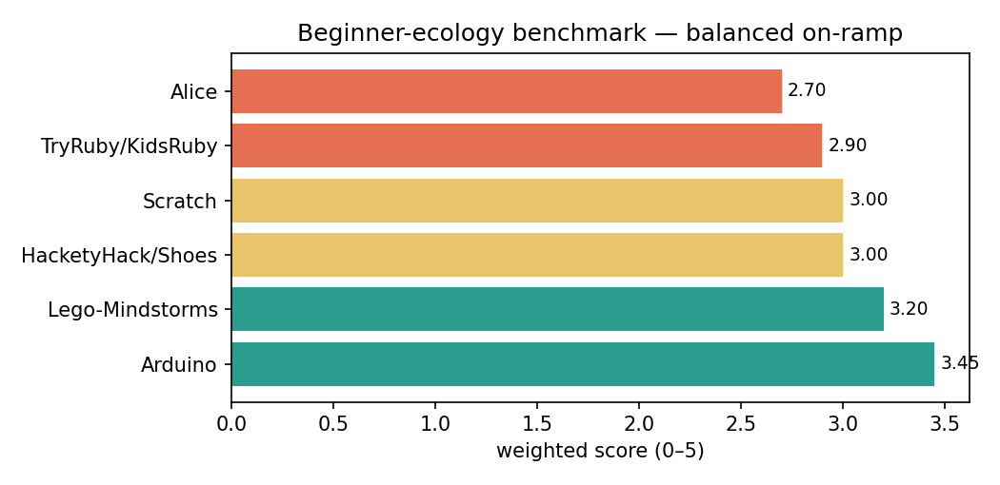

Hackety Hack × Ruby × Shoes — re-executed headless, checked against live public APIs, benchmarked against six beginner ecologies. Every number below is generated by code in this repo, not typed by hand.
▶ Take the 3-minute quizReproduce in 2 commands⭐ Star on GitHub
1. The book's code lessons are still exactly correct: the turtle square closes perfectly and Ruby's 1-line hello is 11× shorter than Java's.
2. Production Ruby is thriving (Rails 8, ~801M downloads, GitHub + Shopify + GitLab) while beginner Ruby is niche (0.53% search-share vs Python 19%) — both true at once.
3. Hackety Hack itself is back: two 2025–26 revivals genuinely boot it again, yet stay 200× smaller than Rails. Best first language ≠ most-searched language.
Read the 3 cards below, try the turtle GIF, then take the quiz. You will know more than most interview candidates about beginner-programming trade-offs.
03_rubygems_live.py04_github_live.py05_stackexchange_live.py07_hidden_patterns.py → results/hidden_patterns.md
Log scale: production scale vs revival scale. Both true at once — the core insight of this study.

Turtle.draw do
background maroon
pencolor honeydew
4.times do
forward 50
turnright 90
end
end
# closure error 0.0 · generalises to triangle (120°) hexagon (60°) — see 01_turtle_geometry.py


Read the turtle code above. One line → visible result. That instant feedback is the whole philosophy from 1980s BASIC to Hackety Hack.
Change 4.times / 90 to 3.times / 120 (triangle) then 6.times / 60 (hexagon). Rule: angle = 360 ÷ sides. Run python3 experiments/01_turtle_geometry.py to prove closure.
alert "Hello, world!" → ask "What is your name?" → quiz with too-high/too-low. Same pattern powers every form on the web.
Shoes uses only stacks (vertical) + flows (horizontal) + button/para/edit_line with blocks. That is enough for Pong, quizzes, converters.
Want games fast → Scratch. Want objects → Alice. Want real Ruby text → TryRuby then Hackety/Scarpe. Want blinking lights → Arduino/Lego (highest transfer per evidence).
Run bash run_all.sh, read results/hidden_patterns.md, re-weight 06_pedagogy_matrix.py. You now reason with live data — interview-ready.
| Feature | What you get | User story |
|---|---|---|
| Headless proofs (01–02) | Turtle + verbosity verified, no GUI needed | As a teacher, I can demo Ch.3 truth in any classroom laptop in seconds. |
| Live APIs (03–05) | RubyGems + GitHub + StackExchange snapshots | As a student, I can cite 2026 numbers, not 2013 anecdotes. |
| Pedagogy matrix (06) | 6 tools × 5 dims + sensitivity test | As a curriculum designer, I can justify Scratch vs Arduino with weights. |
| Hidden patterns (07) | H1–H3 + PhD seeds | As a researcher, I get three preregistered follow-up RCTs/ethnography. |
| Docker + notebook | research / ruby / notebook services | As a reproducer, I run everything with two commands. |
| This page + quiz | Zero-install learning | As a curious visitor, I learn scratch→pro in the browser. |
Click an answer — you get instant feedback + the exact file that proves it. Score ≥6 = pro. No login, no tracking; progress stays on this page.
Score: 0 / 8
pip install -r requirements.txt bash run_all.sh # → data/live_*.json + results/ docker compose up research # pinned python:3.12-slim docker compose run ruby ruby experiments/verify_book_claims.rb # ruby:3.3-slim
docs/index.html; docs/.nojekyll disables Jekyll so relative ../assets/ paths just work.https://<you>.github.io/<repo>/. This file renders as the site; README.md stays the repo front door and links here.upload-pages-artifact + deploy-pages if you later add a build step.experiments/01_turtle_geometry.py 02_verbosity_benchmark.py 03_rubygems_live.py 04_github_live.py 05_stackexchange_live.py 06_pedagogy_matrix.py 07_hidden_patterns.py 08_make_assets.py verify_book_claims.rb assets/turtle_square.gif verbosity.png live_scale.png pedagogy.png docs/index.html (.nojekyll) preview.html (mirror) README.md PAPER.md data/live_*.json results/*.csv *.md docker-compose.yml Dockerfile